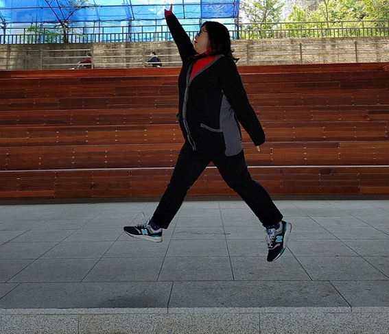
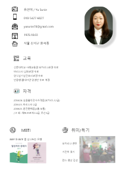
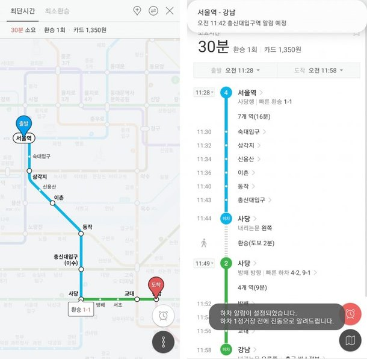

- Name : 유선이
- Birth : 1978. 10. 03
- Address : 서울시 강서구
- Phone : 010-5427-6027
- Email : yusunie@naver.com
로딩중
항상 긍정적으로 생각하는 웹퍼블리셔 유선이입니다.
사용하기 편안한 디자인으로 효율적인 시멘틱 웹사이트를 구축하기 위해
달려갈 준비가 되어 있습니다.
스크롤바를 내리면 작품을 감상할 수 있습니다.
저에게 있어 퍼블리셔는 도전이자 기회입니다.
더 늦으면 배우기 어려울 것 같은 생각이 들어 재촉하며 발을 들여놓았습니다.
처음에는 너무 어렵고 힘들기만 하던 코딩 용어들에 대해 하나씩 차차 알아가며,
나로 인해 바뀌는 페이지들을 보며 이제는 재미있게 작업을 하고 있습니다.
실력과 노력은 비례하는 점을 깨달은만큼!
사용자와 클라이언트 모두가 만족할 수 있게 꾸준히 노력하고 배우며 만들어 나가고 싶습니다.
'누구나 편하게 사용할 수 있는 디자인으로 멋진 스타일을 창조하고 싶다' 는 마음으로 매일 노력하고 있습니다.
HTML5 & CSS3 시멘틱 페이지를 ZenCoding(EMMET), SCSS로 코딩할 수 있습니다.
클라이언트의 요구사항을 적극적으로 반영하는 UI/UX 디자인 능력은 저의 최고의 장점 중 하나입니다.
새로운 코딩기법과 디자인을 배우는 것이 정말 즐겁습니다.
상대방의 눈높이에 맞출 줄 알며,
이타적인 마음으로 항상 상대방을 배려한 공감 능력 2000% 프로 공감러!
열정은 그 누구도 따라올 자가 없으며 사회 생활은 유선이님 처럼! 같은 느낌을 받게 하는 사회생활 만렙!
편안함을 느낄 수 있는 부분이 어떤 부분인지 정확히 캐치하고 심적 안정감을 주는 사람,
추가로 자료 수집 왕으로 표현하고 싶을 만큼 자료 수집에 철저한 사람!
언젠가 파일들이 다 날아갔을 때 요청하면 바로 받을 수 있을거 같은(?) 굉장히 믿음직스러운 맏언니!
다양한 경험을 바탕으로 실작업에 큰 도움을 주는 사람, 작업을 하다보면 귀찮고 반복적인 업무나 혹은 사소한 문제점으로 신경쓰이는 부분이 많은데 그 부분을 쉽게 해소해 주는 사람.
누구보다 열정적이고 노력하며 매 순간 발전하는 무서운 능력을 가졌음에도 매사 겸손한 자세로 주위를 꼼꼼하게 챙길줄 아는 따듯하고도 놀라운 사람.
자신에게 있는 지식과 자료를 함께 공유하는 멋쟁이. 도전정신과 봉사정신?을 본받고싶습니다. 본인을 생각하는 만큼 타인을 생각하는 사려깊은 사람이라고 늘 느껴집니다.ps) 파비콘을좋아함
사용자의 Context와 Needs를 파악하고
Problem을 해결할 수 있는 Insight 도출
시멘틱을 지향하는 HTML/CSS 작성능력 보유,
자바스크립트와 제이쿼리 기반의 로직 구현 가능
협업 웹코딩의 필수 기술인 SCSS를 이용한
CSS 스타일링을 원활이 사용할 수 있습니다.
국내 프론트엔드 시장의 대세 리액트 코드구현,
자바스크립트와 제이쿼리 기반의 로직구현 가능
‘스타일을 창조하여 그것을 섬세한 디자인으로 탈바꿈 시키고싶다’ 는 마음으로
매일 노력하고 있습니다.
HTML5 & CSS3 시멘틱 페이지를 ZenCoding(EMMET)으로 코딩할 수 있습니다.
클라이언트의 요구사항을 적극적으로 반영하는 UI/UX 디자인 능력은 저의 최고의
장점중 하나입니다.
JS 플러그인을 사용에 그치지 않고 필요한 기능을 직접 구현할 수 있는 Javascript/jQuery 로직구현이 가능합니다.
새로운 코딩기법과 디자인을 배우는 것이 정말 즐겁습니다.

UX의 정의에 대해서 알아보고, 다양한 UX의 사례들, 특히나 성공적인 UX라 불리는 사례들을 보면서
사용자 경험을 바탕으로 어떤 제품이나 서비스를 구축하는 것의 중요성을 깨달았다.
내가 생각하는 UX란, 사용자가 원하는 기능을 사용할 때 사용자가 불편함을 느끼지 않고 사용할 수 있도록 하고,
원하는 활동을 편리하게 제품이나 서비스를 이용하여 할 수 있도록 하는 것이라는 생각이 들었다.
사전적인 의미에서 UX란 사람의 여러 감각과 감정의 총합을 뜻하는데, 내가 생각하는 UX는 ‘불편함’이라는,
혹은 다르게 불릴 수도 있는 부정적인 감정을 최소화시키는 것이라는 생각이 든다.

Peugeot motocycle Korea Renewal Design
제 능력을 확인해 보기 위해 처음으로 작업한 사이트입니다.
파비콘을 만들어 넣고,
작업프로그램 : Visual Studio Code
100% 개인 작업


ISAAC TOAST Renewal Design
기존 웹사이트의 개선사항을 찾아 메인페이지를 리뉴얼 디자인하였습니다.
이삭토스트의 컬러 아이덴티티를 사용하여 브랜드 이미지를 강조하였으며,
간결한 레이아웃으로 전달하고자 하는 내용을 보기 쉽게 배치하였습니다.
작업프로그램 : Photoshop, Visual Studio Code
100% 개인 작업


DANYAGN TRAVEL Site Design
4가지 카테고리로 나누어 단양의 대표적인 문화를 소개하는 원페이지
형식의 사이트를 제작하였습니다. 도담삼봉을 담은 로고마크를
디자인하였으며, 로고에 사용된 컬러를 적용하여 통일성을 주었습니다.
작업프로그램 : Photoshop, Illustrator, Visual Studio Code
100% 개인 작업


‘스타일을 창조하여 그것을 섬세한 디자인으로 탈바꿈 시키고싶다’ 는 마음으로 매일 노력하고 있습니다.
HTML5 & CSS3 시멘틱 페이지를 SCSS, ZenCoding(EMMET)으로 작성할 수 있습니다.
클라이언트의 요구사항을 적극적으로 반영하는 UI/UX 디자인 능력은 저의 최고의 장점중 하나입니다.
JS 플러그인을 사용에 그치지 않고 필요한 기능을 직접 구현할 수 있는 Javascript/jQuery 로직구현이 가능합니다.
새로운 코딩기법과 디자인을 배우는 것이 정말 즐겁습니다.
페이지 전체의 계층구조를 입체적으로 분석할 수 있는
실무형 코딩기법 Emmet을 사용할 수 있어 업무시간을 단축시킬 수 있을뿐 아니라,
유지보수도 더욱 쉽고 정확하게 처리할 수 있습니다.
SCSS의 가장 큰 장점인 변수와 Mixin 기능을 적극 활용하여
CSS 스타일링을 할 수 있습니다.
Sprite-Image와 IR(Image Replacement)기법에 능숙
id, class를 남발하지 않고 원하는 요소를 셀렉팅할 수 있는 능력,
CSS3 Transform, Transition, Keyframes을 이용한 애니메이션 효과 구현
슬라이드 구현에 적합한 ul,li,a 태그와 flxe를 사용하여 UI를 구현하였습니다.
또한 자바스크립트로 position의 lef값을 동적으로 변화시켜 이동하도록 하였습니다.
플러그인 없이 직접 구현하였습니다.
이전, 다음 기능을 가진 업그레이드 된 슬라이드로서 사용자 편의성을 향상되었습니다. 제이쿼리의 fadeIn(), fadeOut() API를 이용하여 코드를 구현하였습니다. 플러그인 없이 직접 구현하였습니다.
슬라이드 보기

시작, 정지기능이 장착된 슬라이드로서 일관성있게 한쪽 방향에서 다음 슬라이드가 노출되는 기능을 append() API와 콜백함수의 개념을 접목하여 구현하였습니다. 플러그인 없이 직접 구현하였습니다.
슬라이드 보기

저의 웹퍼블리싱 이야기 입니다.
질문을 선택하시면 정리된 답변을 보실수 있습니다.
더욱 궁금하신 점은 면접시 말씀드리겠습니다. 감사합니다~!
본 페이지는 저의 개인 포트폴리오용으로 제작되었으며, 상업적인 목적과 관련이 없음을 알려드립니다.